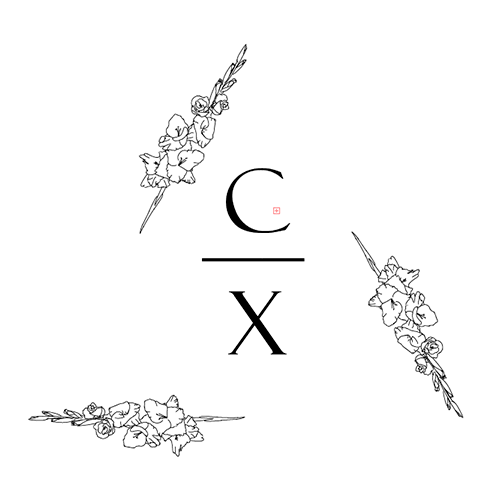
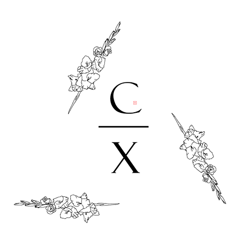

Multimediedesign
Erhvervsakademi Aarhus
Gennem uddannelsen har jeg lært at omsætte min evne til at lytte til at opfylde et
digitalt behov, og jeg kan gennem research og brugertest udarbejde skitser,
wireframes
og mockups som skaber fundamentet for værdifulde resultater.
Jeg har fået mulighed for at kombinere kreativ tænkning med teknologisk og digital
nysgerrighed, og jeg bliver hele tiden sulten efter mere.
Uddannelsen har åbnet op for en verden, jeg havde glemt, men som jeg
elsker og er enormt facineret af.